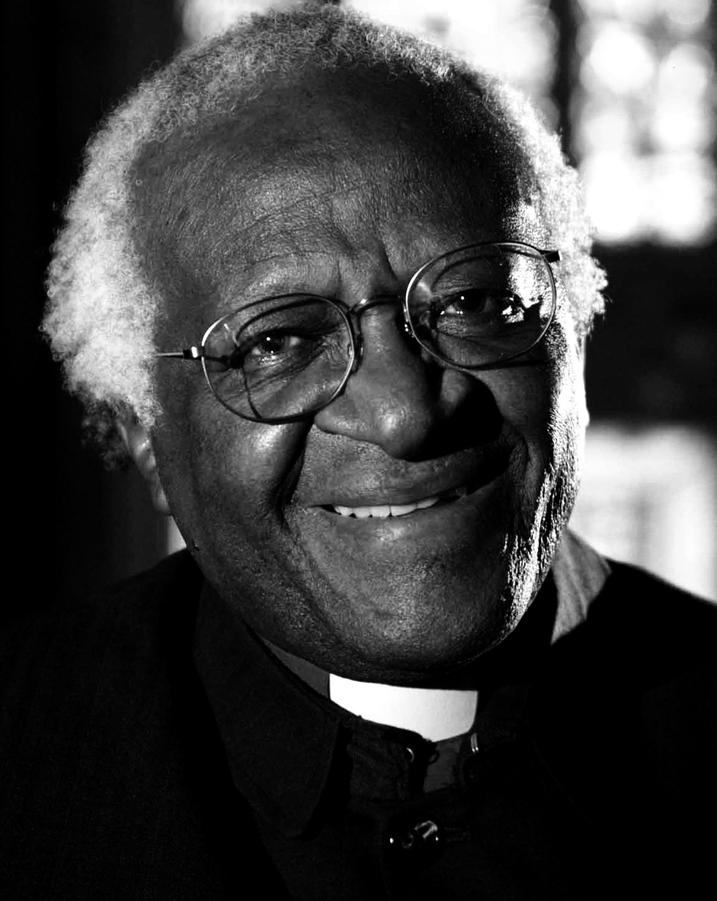
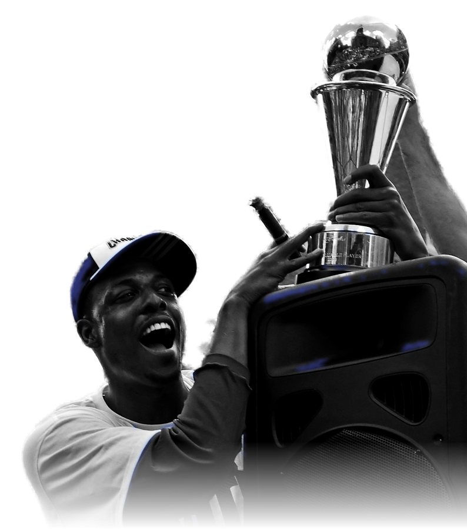
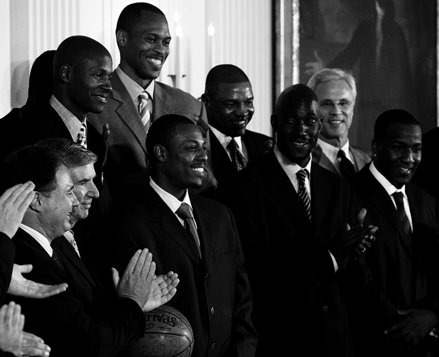

CLASIFICACIÓN · TEMPORADA 2006-07RECREACIÓN
82 PARTIDOS · ● GANADOS · ● PERDIDOS
FICHA · BOSTON, OCTUBRE DE 2007

DESMOND TUTU
soy gracias a ti
LIBRO: RECREACIÓN
CLASIFICACIÓN · TEMPORADA 2007-08RECREACIÓN

FINAL 2008 · PARTIDO 6
131 – 92
BOSTON – LAKERS · 17/06/2008
PAUL PIERCE EN EL DESFILE DEL TÍTULO · BOSTON, 19/06/2008 · FOTO: PAUL KELEHER, CC BY 2.0 (MODIFICADA)

LOS CELTICS CAMPEONES DE 2008 EN LA CASA BLANCA (19/09/2008) · FOTO: JOYCE BOGHOSIAN, DOMINIO PÚBLICOFOTOS: SHAKA (CC BY-SA 2.0 IT) · BENNY GOOL (DOMINIO PÚBLICO)
PAUL KELEHER (CC BY 2.0) · JOYCE BOGHOSIAN / CASA BLANCA (DOMINIO PÚBLICO)
VÍA WIKIMEDIA COMMONS · TABLA, LIBRO, CORRO Y MARCADOR: RECREACIÓN